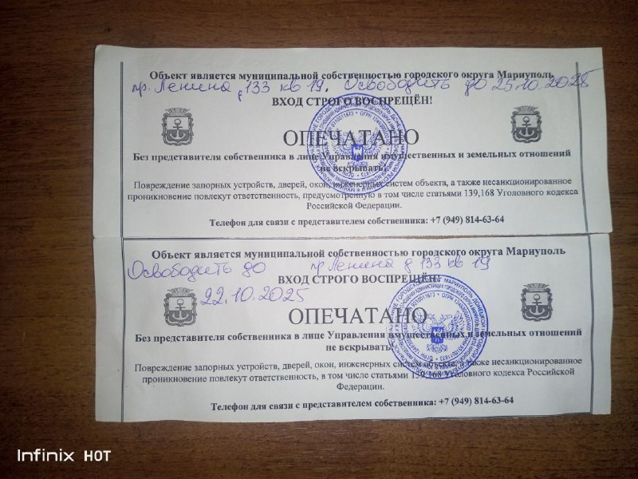
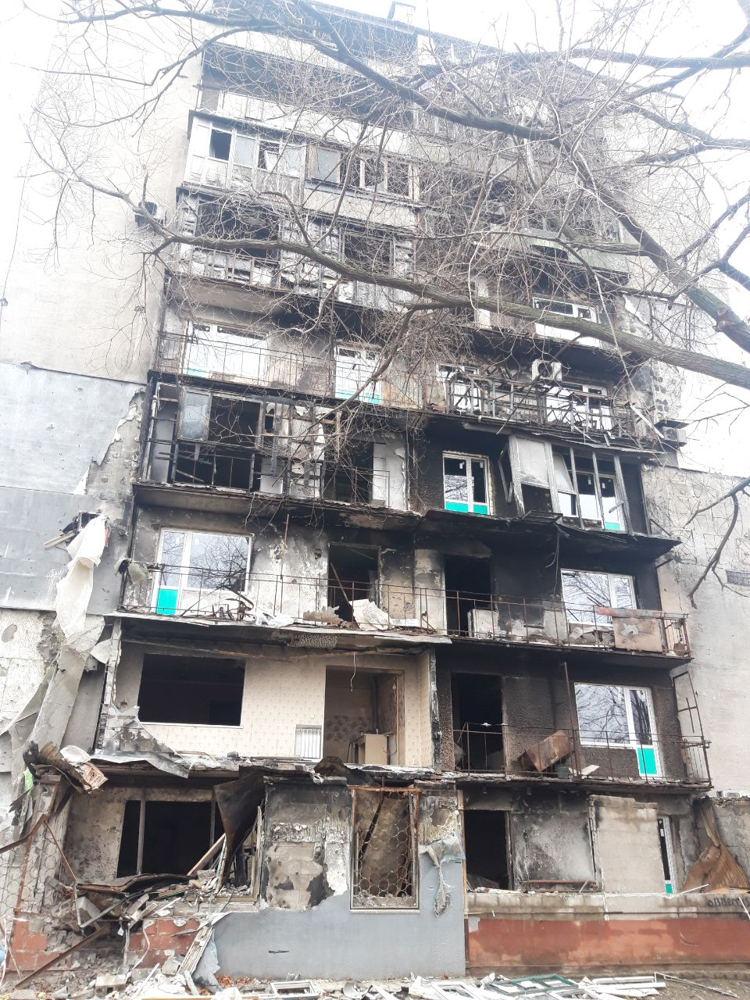
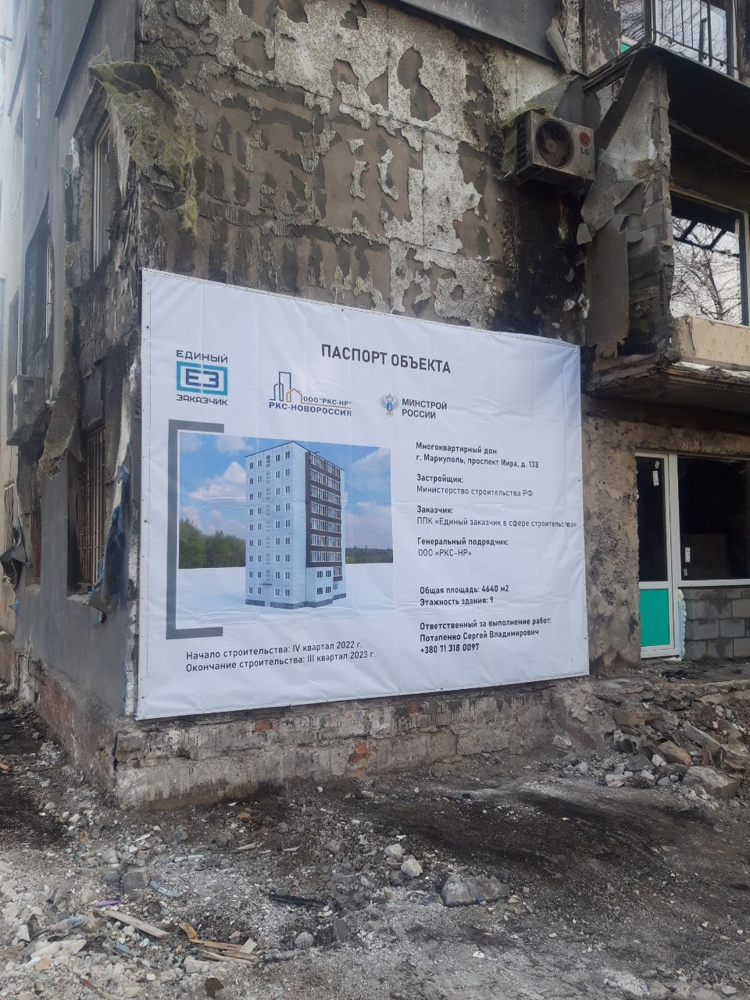
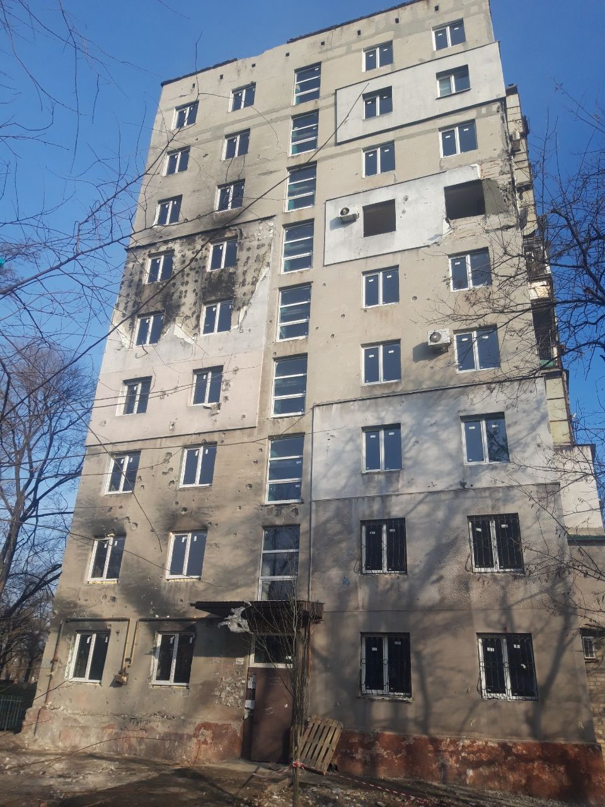

05 · The registry, ground level · Lenina Avenue (Myru), 133 · Occupied Mariupol
Every other case study in this dossier documents the seizure system through decrees, registry exports, and resale listings — the paper trail. This one documents the moment the paper trail reaches a door: two printed “SEALED” notices, a handwritten vacate deadline, and a 73-year-old woman who has lived in the apartment for years, holding a power of attorney the administration will not recognize.
The evidence · 23 October 2025
Posted to a Russian-language, occupation-critical Telegram channel relaying resident complaints, captured before any parsing or analysis, as is standard for every Telegram-sourced artifact in this project. The photograph shows two near-identical printed notices stacked on the same door, each carrying a different handwritten vacate date — most likely either a re-posting after the first deadline lapsed, or two separate sealed openings (door and window or balcony) closed on different visits. Either reading places active enforcement squarely in the week of 20–25 October 2025.

Lenina Avenue, 133, apt. 19 · photographed 23 Oct 2025Printed notice text (translated)
“This property is the municipal property of Mariupol urban district… Vacate by 25.10.2025 / 22.10.2025… ENTRY STRICTLY FORBIDDEN! SEALED. Do not open without a representative of the Department of Property and Land Relations. Damage… or unauthorized entry will result in liability, including under Articles 139 and 168 of the Russian Criminal Code.”
Note what the notice does not say: no case number, no ruling date, no reference to a court at all. The 2024 ruling is something officials told the resident in person, not anything printed here.
Testimony · same post, same channel
The post that carries the photograph also quotes a subscriber’s first-person account, and frames apartment 19 as one of four in the same building facing the same process — apartments 2, 19, 20, and 33, all said to have court rulings dated to 2024.
“Court [rulings] for apartments 2, 19, 20, 33 in the building at Lenin Avenue 133 already happened back in 2024. Some owners didn’t manage to register with Rosreestr in time, some couldn’t return from Belarus, others didn’t manage to complete inheritance paperwork because of queues and notary delays. And now people WITH RESIDENCY REGISTRATION are being smoked out of their apartments.”
— post body, 23 Oct 2025
“We have an apartment on the list too. Mom lives there and is registered, but the owner is in Belarus. There’s a power of attorney, but they don’t take that into account. They sealed the apartment and asked [us] to leave. A 73-year-old mother lives in the apartment. All utilities are paid, and every utility company has agreements on file under the power of attorney… By law the apartment can be registered with Rosreestr up until 2028. The administration said there was a court ruling on бесхоз [ownerlessness] in 2024 and it belongs to the municipality.”
— quoted subscriber, apartment 19, specifically
“In the same building 133 on Lenin Avenue, people live in apartments 2, 19, 20, 33. All of them are directly connected to the owners, but all were told to vacate. This is bureaucratic lawlessness.”
— post body, closing line
This is not a single, unverifiable post. The same four apartments — 2, 19, 20, 33 — and the same 2024 timing are independently reported by Ukrainian outlets citing Petro Andryushchenko, head of Mariupol’s Center for Studying Occupation, who describes the practice as “direct raiding under the cover of pseudo-administration.” One of those reports separately names a door-to-door inventory under way at Chornomorska Street, 10 — the same address flagged as an open lead below, now corroborated from an entirely separate source.
The building
What makes this case study possible is that the photograph and testimony name a building, an apartment number, and an administrative designation this project had already independently documented — allowing the new material to corroborate an existing record rather than stand as a stray, unverifiable claim.
Resolved tension · cross-checked against the building’s own resident chat
A 73-year-old resident living in a building the occupation’s own federal tracker lists as 100% destroyed and slated for full reconstruction is, on its face, a contradiction. A residents’ Telegram chat for this exact building — running since November 2022 — resolves it, and supplies dated photographs of its own.



| Date | Evidence |
|---|---|
| 9 May 2022 | Building standing intact (satellite imagery). |
| Spring 2022 | Severe fire damage to part of the facade and balconies. |
| 21–28 Nov 2022 | Resident chat opens — “Welcome home!!!”; temporary roof patches, building-wide window replacement, electrical and plumbing restored by an outside repair-fund contractor. |
| 9 Dec 2022 | An official project-information sign is posted, listing builder, contractor, area, floor count, and a construction timeframe under the heading “construction.” It does not use the word “demolition.” Residents immediately ask whether it means new construction or repair — “two very different things.” |
| 21 Dec 2022 | Residents conclude the sign really does say “construction,” and allege an outside commission had separately cited weak floor slabs — with no resident meeting or notice beforehand. |
| 2022–2024 | A two-year contractor “restoration” effort runs, contested by residents throughout on quality and safety grounds — see below. |
| Sep 2024 | Restoration work formally halted: cracks found in load-bearing basement walls, no approved project, no funding. Monitoring sensors installed on the cracks. |
| Oct 2025 | Individual apartments sealed as «бесхоз» one at a time, on the separate ownerless-registry track, regardless of the unresolved structural question. |
What this means
The federal tracker’s “100% destruction” entry is real, but it records a plan, not a built fact: residents document reoccupation and repair both before and after the sign was posted, the same structure still stands today, and the occupation pursued individual-apartment «ownerless» seizure instead of the demolition the tracker anticipated. Worth being precise about what is and isn’t on file: there is no numbered demolition decree for this building in either of the project’s demolition-order datasets, and the sign itself — despite being read by residents at the time as possibly meaning new construction — only states project metadata (builder, contractor, timeframe) under a generic “construction” heading; it never mentions demolition. The only place “under demolition”-grade language appears is in residents’ later account of a verbal, unminuted assessment from an outside commission (see below) — not in anything printed or numbered. A demolition the tracker recorded as planned never visibly happened; a flat-by-flat seizure proceeded instead, on an unrelated track.
The same resident chat · Dec 2022 – Oct 2024
The sign said “construction.” What residents got, and documented as it happened, was a contested, multi-year repair effort that several agencies described to them in three different and conflicting ways — and that the building’s own paper trail eventually called unsafe.
“Apartments 25, 27, 31, 42 — the foam sealing is bad, this isn’t proper insulation, it’s a botch job!!!”
— resident, 2 Dec 2022, on the contractor’s window/door work
“If you express dissatisfaction in the ‘RKS-NR’ group chat… you get blocked… that’s how that group’s admins deal with people who tell the truth about substandard restoration of residents’ housing.”
— resident, 24 Aug 2023
“Such a crack in the pipe inside the basement wall… the basement was dry before the contractor’s work began, and this is the condition it was handed back to us in once the restoration work was ‘finished.’”
— resident, 8 Nov 2023
By the building’s own correspondence, three different agencies gave three different answers about what was even happening to it: DNR Minstroy told residents, in autumn 2022, that capital repair was planned. The sign three months later said “construction.” A later letter from GBU MO UTNKR, the Moscow-region technical-oversight body now involved, said only that the thermal envelope had been closed and the building was being used as temporary group housing.
Residents separately allege that before the contractor — MK Group, working for the Moscow Oblast Capital Repair Fund (FKRMO) — took on the restoration work, an inspecting commission from Moscow had already told them the floor slabs were weak and the building qualified for hazard category “a” — the same category used for demolition candidates. No resident meeting or formal notice preceded the work starting anyway. Project leads named in the chat rotated repeatedly over the next two years — Tatarenko V., then Ponomarev O., then Belitsky, then Burlakov.
The work ran for roughly two years under that team, with residents documenting balcony doors that wouldn’t open in 40°C heat, a non-functioning elevator, a basement flooded for over six months, and recurring sewage problems. In September 2024, the work was formally halted: cracks were found in load-bearing basement walls, monitoring sensors were installed, and residents were told there was no approved project and no funding to continue. One resident pointed out that the diagnostic core-sampling used to assess the structure was reportedly done at the end of the two years of work rather than at the start — the reverse of normal practice, where an inspection precedes the repair it is meant to inform.
One resident, writing on 5 July 2024, described the conditions as unlivable and said she believed the stress of them had contributed to a family member’s death months earlier — a connection this project has no way to verify independently. It is included here only because it conveys how strongly at least one resident experienced the two years described above, not as a verified causal claim.
Why this matters for the case
This building was, by its own paperwork, declared structurally hazardous — a demolition-candidate category — in the middle of a two-year repair effort that proceeded regardless, and was eventually halted for the very defect a commission had flagged before it began. None of that affected the timeline of the «ownerless» registry process: apartments 2, 19, 20, and 33 were run through a 2024 court ruling and physically sealed in October 2025 on a track that never references the structural question at all. The repair track and the seizure track ran in parallel, answerable to different agencies, and never had to reconcile with each other — which is exactly how a resident with a valid power of attorney and paid utility bills ends up sealed out of a building no one can say, on the record, is actually unsafe to occupy.
Accountability endpoints
Every other “ownerless” designation this project has documented is a paper record — an administrative act with no further trace of consequence. This is the first time the project can show, with a date and a photograph, what that paper record looks like once it is physically enforced against a resident who is still living there. The statutory basis for that paper record is DNR Law No. 66-RZ (21 March 2024), “On the specifics of identifying, using, and recognizing rights to ownerless real property” — the printed notice on this door cites none of this; it states only that the apartment is municipal property.
CoE RD4U · Restitution
Rome Statute · Criminal
The project’s author investigates and documents the dispossession of Mariupol’s residents using only his own time and resources — no editorial budget, no grants, no institutional backing. If you find this work valuable, you can help offset some of the costs I’ve incurred.